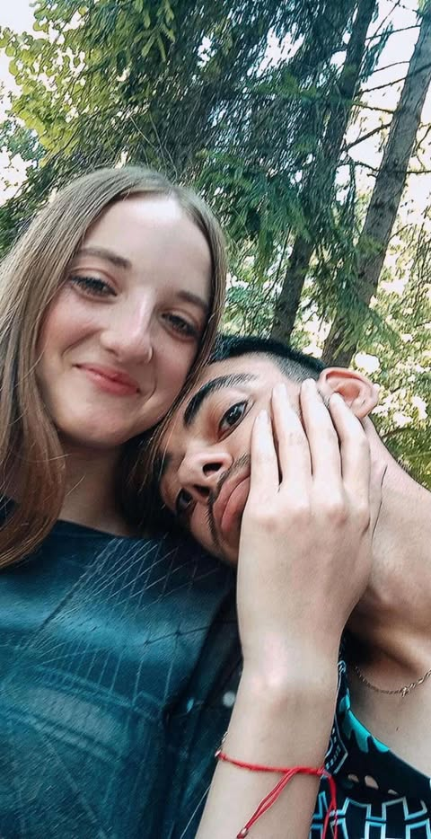
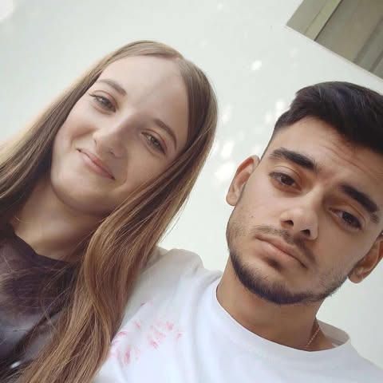
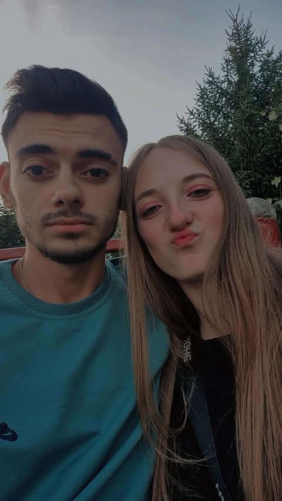

Am făcut site-ul ăsta special pentru tine. Te iubesc enorm 💕
  Într-o lume care aleargă prea repede, te-am întâlnit pe tine. Și dintr-odată, timpul a început să meargă mai încet, ca și cum voia să ne lase să ne descoperim pas cu pas.
În fiecare zi cu tine am învățat ce înseamnă liniștea adevărată, râsul care vine din suflet și privirea care spune „sunt aici” fără să fie nevoie de cuvinte. Tu ai transformat lucrurile simple în amintiri mari și momentele obișnuite în povești pe care vreau să le spun mereu.
Au trecut 10 luni… zece luni în care m-ai învățat să iubesc mai curat, mai sincer, mai curajos. Zece luni în care mi-ai fost sprijin, zâmbet, motivație și acasă.
Cu tine am învățat că dragostea nu e perfectă, dar e reală, și că atunci când e reală, merită totul. Fiecare îmbrățișare, fiecare ceartă mică, fiecare „mi-e dor” m-a adus mai aproape de tine.
Așa că mulțumesc. Mulțumesc pentru cele mai frumoase 10 luni din viața mea. Mulțumesc că ești tu, exact așa cum ești.
Dacă povestea noastră ar fi o carte, aș reciti-o la nesfârșit… și aș aștepta cu nerăbdare capitolele care urmează. Te iubesc azi, te iubesc mâine și în toate zilele în care vom continua să scriem „noi”. 💞📖